Sights and Insights
COLLABORATOR: Christine Chang
PROJECT ROLE: UI/UX Designer, Web Developer, Prompt Engineer
TOOLKIT: Figma, HTML/CSS, JavaScript (Node.js, Express.js), ElevenLabs API, OpenAI API, Render
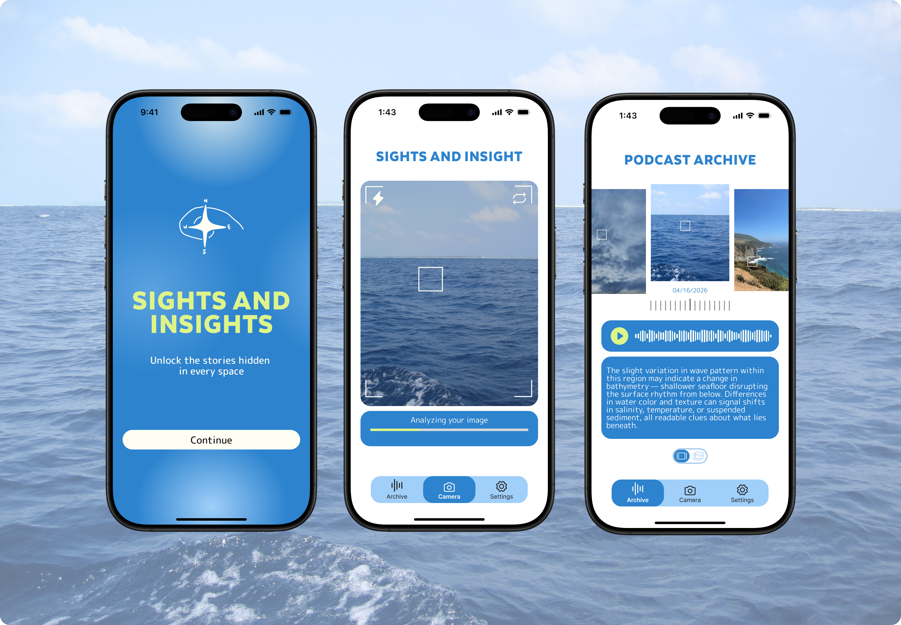
AI Application
Speech Synthesis
Podcast Generation
Design Problem
How can AI encourage us to engage directly with our physical surroundings rather than confining us to digital spaces? As technology increasingly mediates our daily experiences, there's an opportunity to leverage AI not as a barrier, but as a bridge which prompts us to observe, question, and connect with the spaces we move through. The core design problem is: Can we create AI-based experiences that reinforce curiosity and active engagement with the real world around us?
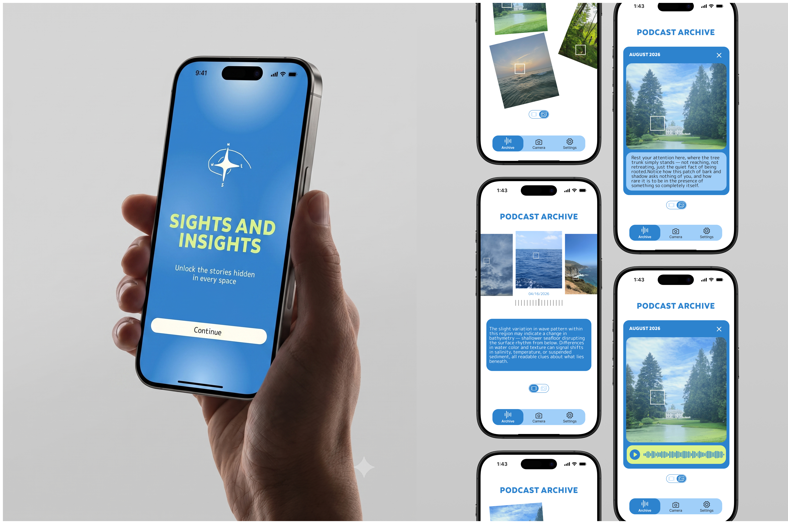
Transforming ordinary walks
Sights and Insights is a web-based application that transforms ordinary walks into ones filled with curious interventions and meaningful discoveries. This voice-based AI application encourages users to actively engage with the spaces they find themselves in—whether navigating familiar neighborhoods, exploring new cities, or walking through nature. Rather than passively consuming content, users are prompted to observe, question, and connect with their physical environment in dynamic ways.
The application offers different interaction modes—speculative thinking, playful wordplay, mindfulness, and learning—adapting to your context and intentions. It creates personalized podcasts that respond to what you see, what you want to know more about, and where you are. Every walk becomes an opportunity for curiosity, learning, and deeper connection with the world around you.

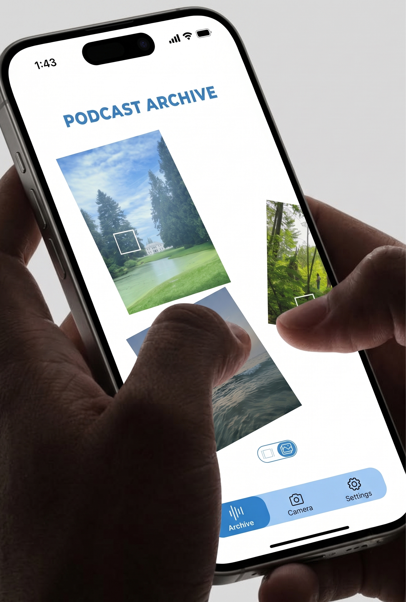
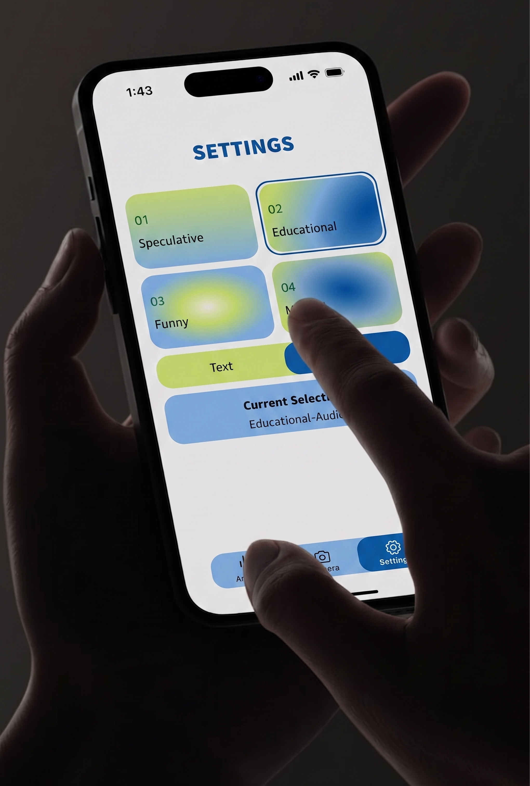
User Interaction
When you first open the application, you're prompted to click anywhere on your video feed to start interacting with the space around you. Clicking on the real-time feed captures a snapshot and marks the area you selected. The image is then analyzed to identify what you clicked on and its surrounding context. For example, clicking on a cloud prompts questions like: Is it an overcast day or sunny? What kind of location are you in? Is there anything else in the image? These factors are shaped into a specific tone—whether it highlights the scientific aspects of cloud formation, grounds you in your surroundings, or weaves fictional narratives around it.
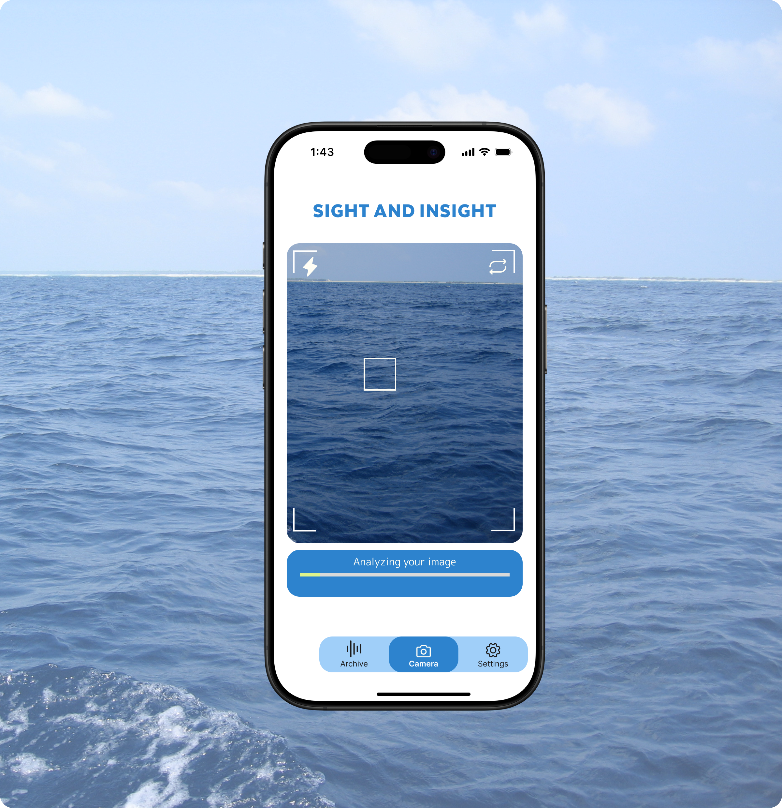
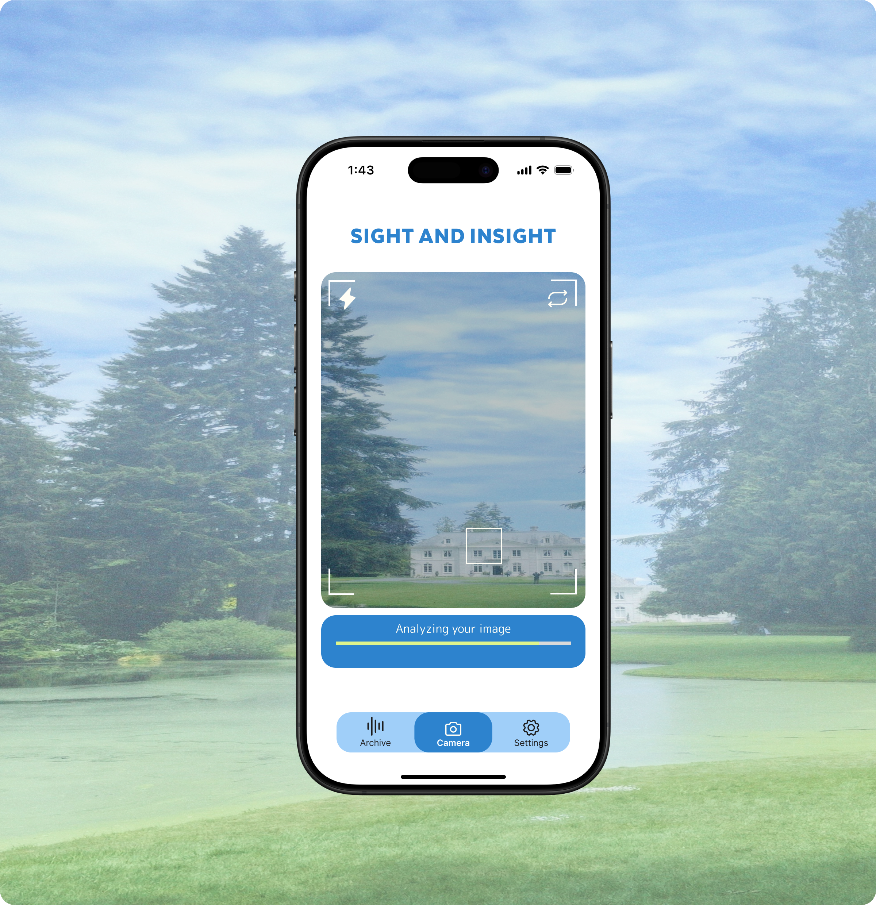
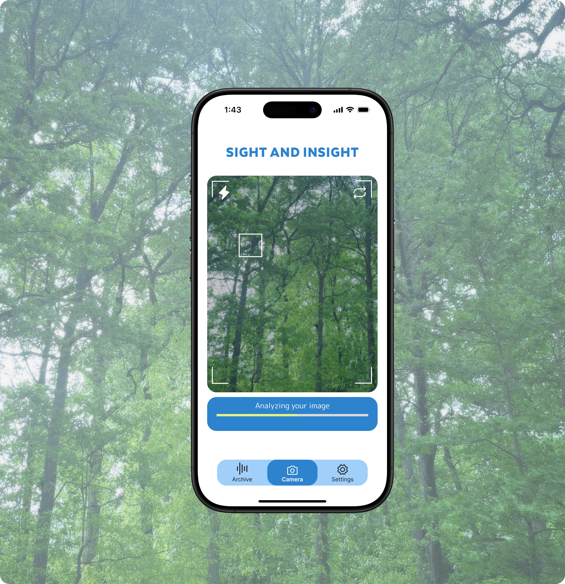
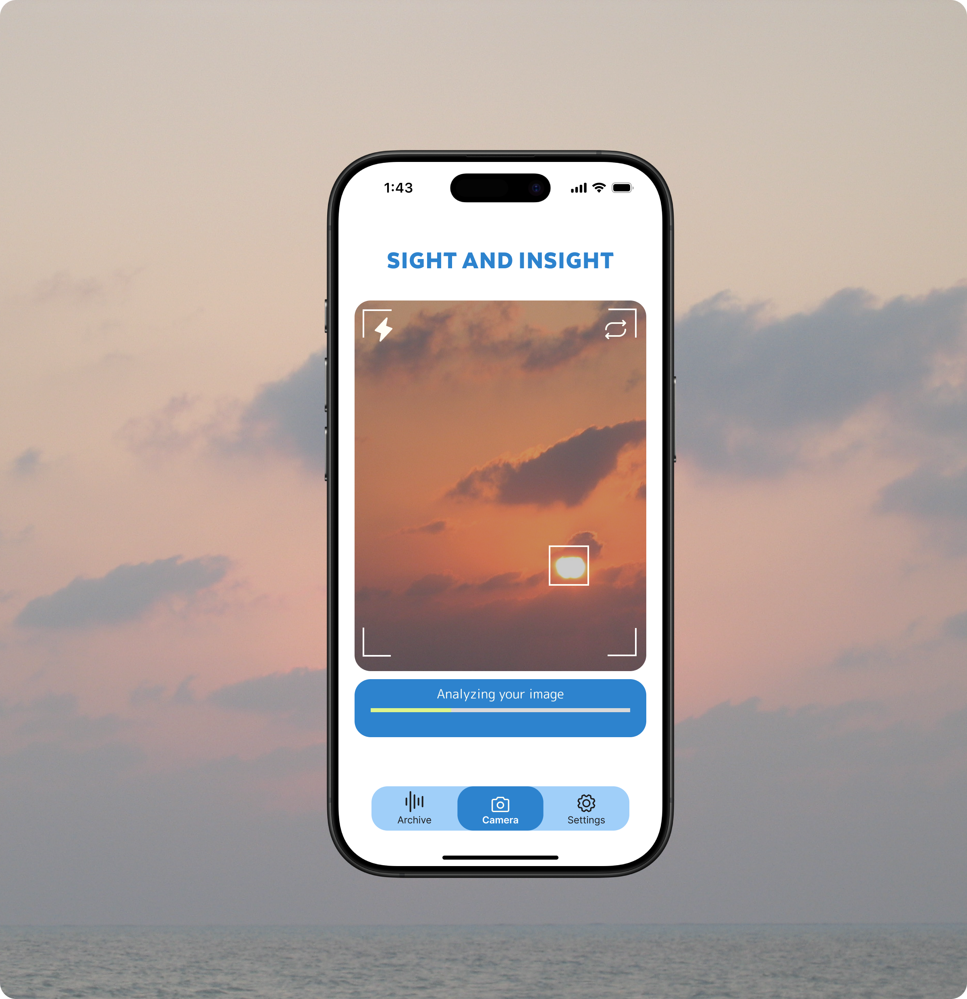
As you click through your environment, you receive podcasts in tones that match your intention that day, helping you connect more deeply with the world around you.
Making of Sights and Insights
The application is built with HTML/CSS and JavaScript, hosted on Render. It uses the OpenAI API to generate podcast content and the ElevenLabs API to create natural voice tones.
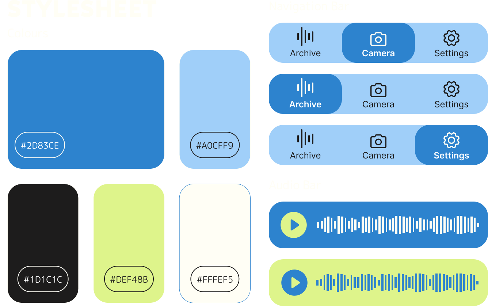
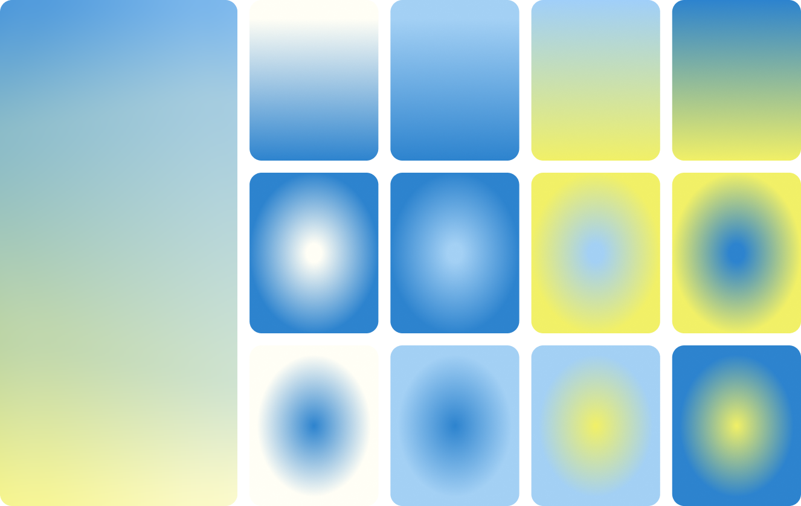
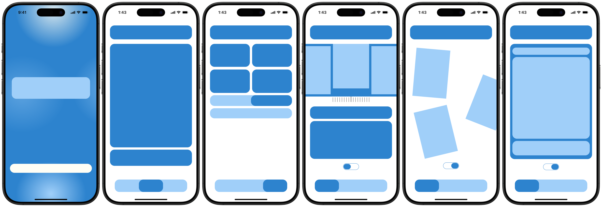
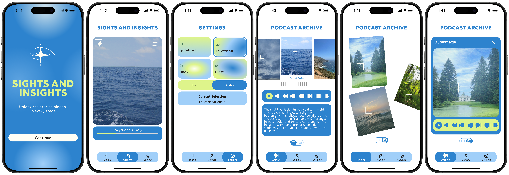
Further Iterations
Sights and Insights is designed for exploration. By combining AI-generated audio with real-time environmental engagement, it reimagines how we interact with our surroundings—turning passive observation into active discovery.
It's an idea that can be expanded in many directions: highlighting history embedded in city landmarks, providing context while wandering through museums, identifying plants and birds in national parks, or simply helping you navigate everyday neighborhoods with fresh curiosity.